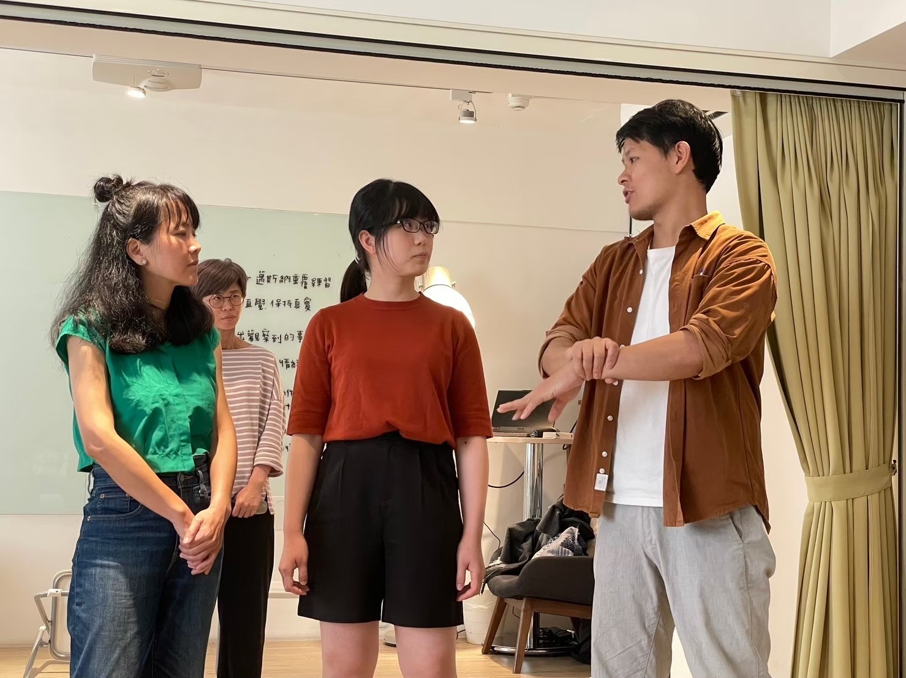
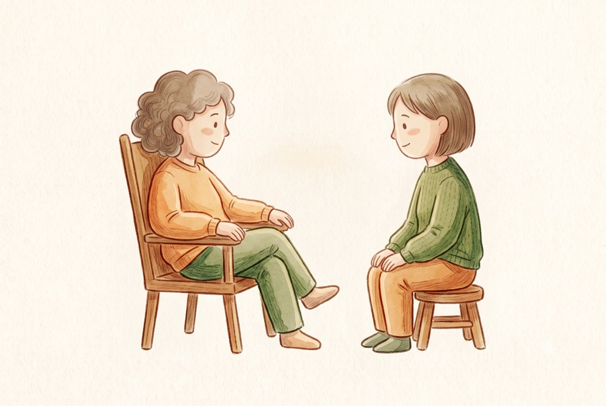
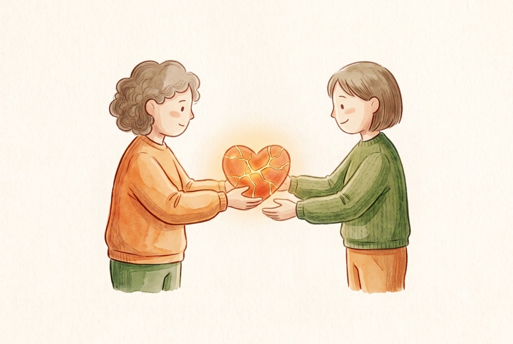
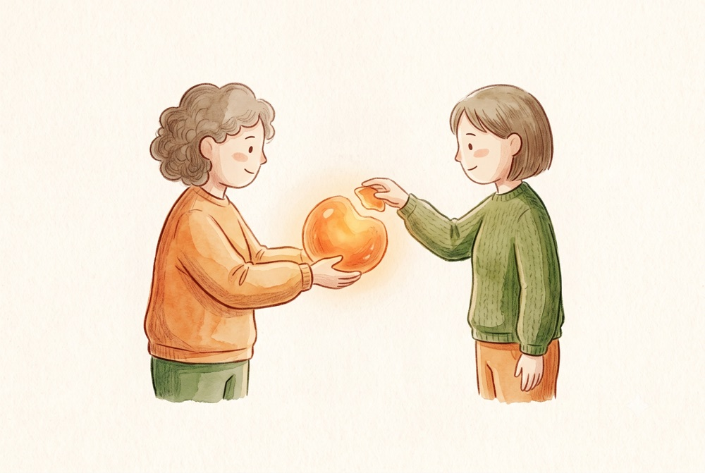

把即興劇的原則帶進心理治療室 —— 關於接受、當下與共同創造的筆記。
tomoewcc ・ 本頁瀏覽 —

Keith Johnstone 認為每一次互動都在協商地位高低。這個鏡片一旦戴上，治療室裡許多卡住的地方會忽然變得可見。
tomoewcc ・ 發布 2026-07-28 ・ 更新 2026-08-02 ・ 瀏覽 —

即興演員被訓練成把失誤當成材料，而不是需要掩蓋的瑕疵。這個習慣，恰好對應治療關係中最有價值的一段工作。
tomoewcc ・ 發布 2026-07-02 ・ 更新 2026-08-02 ・ 瀏覽 —

即興劇最基本的原則，其實是一種關係姿態。它談的不是同意對方，而是不否認對方提出的現實。
tomoewcc ・ 發布 2026-06-14 ・ 更新 2026-08-02 ・ 瀏覽 —